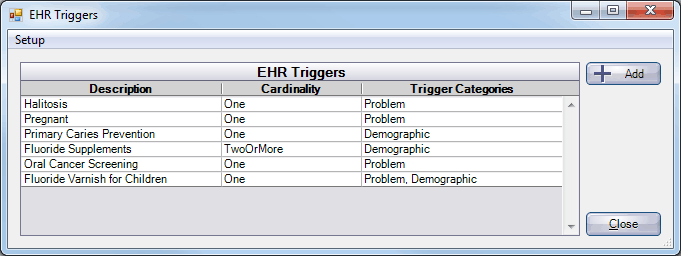

EHR Configure CDS Rules
In the Main Menu, click Setup, Chart, EHR, then click CDS Triggers.
Clinical Decision Support rules (CDS) rules determine what conditions trigger EHR CDS Interventions. Conditions can be problems, medications, allergies, age, gender, vital signs, lab results, and/or specific codes.
Users must have the Edit CDS Permission to configure interventions.
Click Add to create a new intervention or double click an existing intervention to edit.

Enter the Description of the intervention.
Click the Cardinality down arrow and set when the CDS support intervention will be triggered:
- One: only one condition must be met.
- One of each category: One condition from each category must be met.
- Two or More: At least two of the conditions must be met. Does not work with Vital Signs, Age or Gender.
- All: Every condition selected must be met.
Click a button on the left of the window to define the condition(s) that will trigger the CDS intervention. There are 6 categories:
- Problem: Triggered by Problem, ICD-9 or ICD-10 code, or SNOMED CT code.
- Medications: Triggered by Medication, RxNorm, or CVX code.
- Allergies: Triggered by Allergy name.
- Demographics: Triggered by Age or Gender. For age, enter the operand and value (e.g. >18). For gender, enter female, male, or unknown.
- Lab Results: Triggered by specific lab results.
- Vital Signs: Triggered by height, weight, or BMI. Enter the operand and value. - For height, enter inches (=>60). - For weight, enter lbs (<100). - For BMI, enter percentage (>27.5%).
Instructions: Enter clinical, diagnostic or therapeutic guidance.
Bibliography: Enter reference information.
Click OK to save.